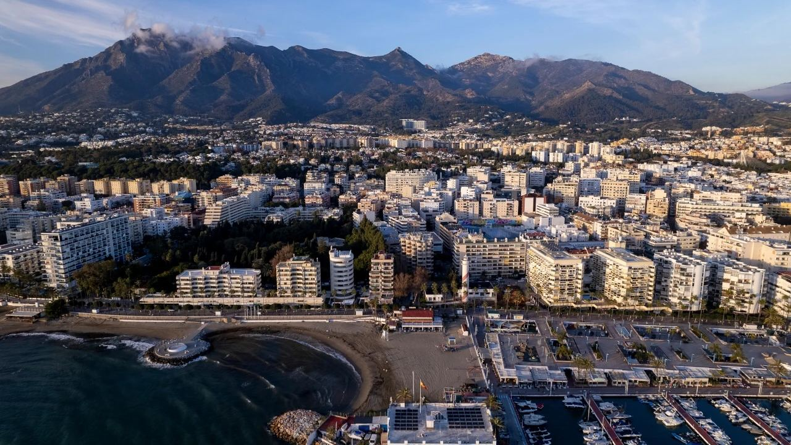
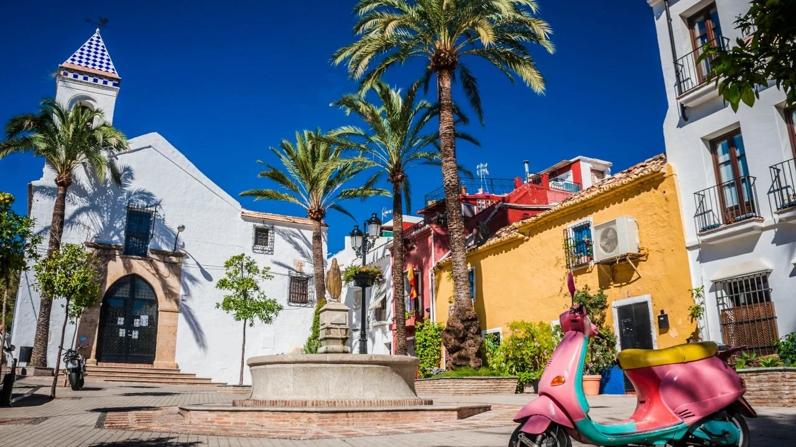
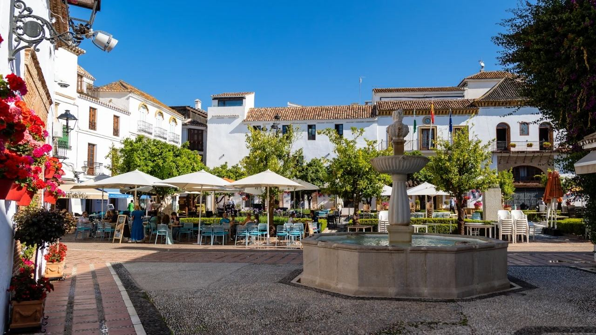
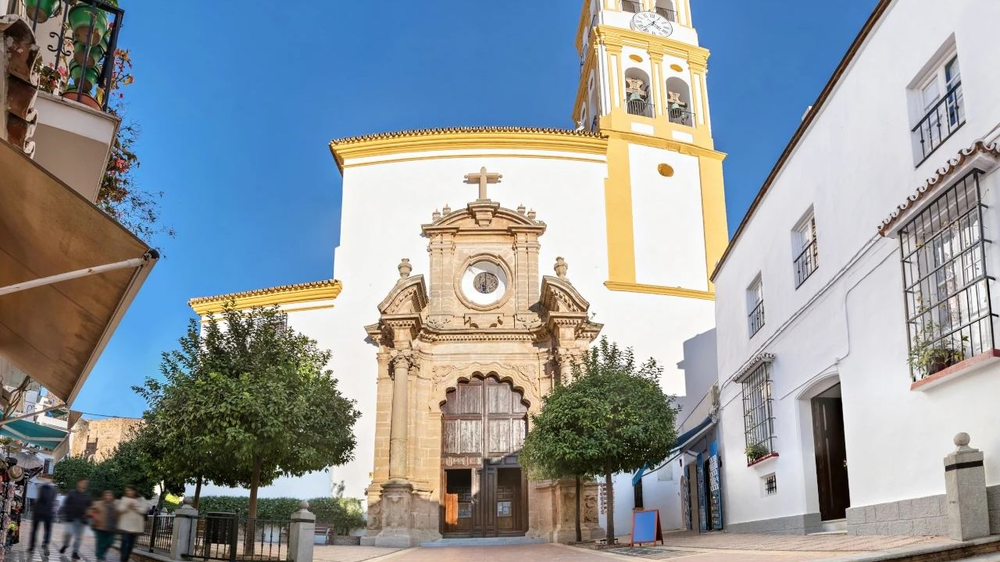
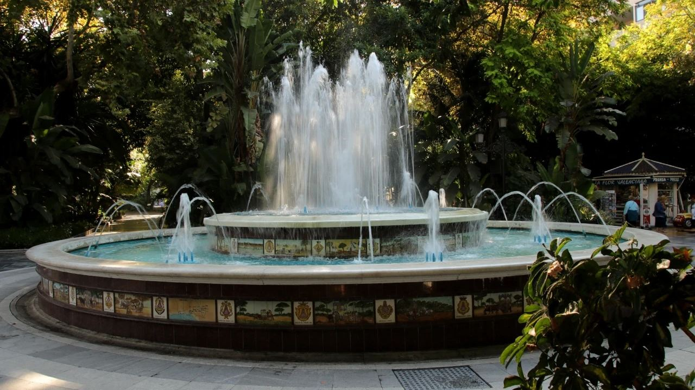
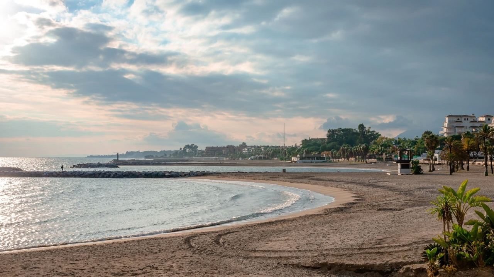
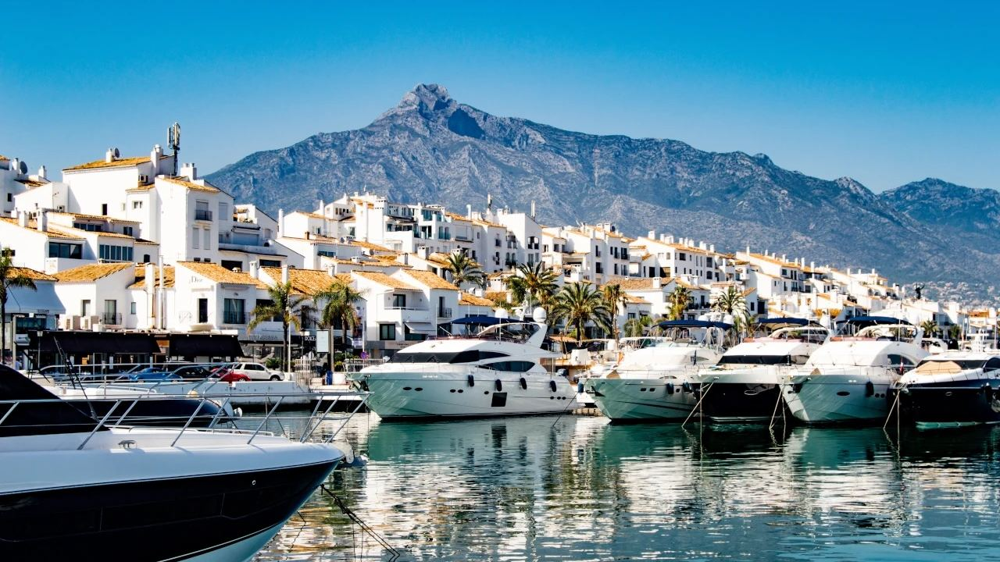

Places · Costa del Sol
What to See in Marbella: Top 10 Attractions
 By Lucyna Gacek · · updated · 4 min read
By Lucyna Gacek · · updated · 4 min read

In short: Marbella is a city of about 160,000 people on the Costa del Sol, around 45 minutes from Málaga airport. Its top sights are the whitewashed old town and Plaza de los Naranjos, the Church of the Incarnation, the Alameda park and the Dalí sculptures on Avenida del Mar, the long seafront promenade, Puerto Banús and the Golden Mile, the walk up La Concha, the Roman remains in San Pedro and the Artola dunes at Cabopino. The municipality has about 27 km of beaches.
Marbella is famous for luxury, but the city has much more to offer than yachts and beach clubs. Behind the seafront is a beautifully kept Andalusian old town, and the coast is framed by the Sierra Blanca mountains, which protect it from cold winds and give it a mild climate all year.
Here are ten places we always recommend, whether you have a weekend or are getting to know the city before buying a home.
1. The old town (Casco Antiguo)

The old town grew inside the walls of a Moorish castle, and parts of those walls still stand. Today it is a maze of narrow white streets with flower pots, small squares, boutiques and tapas bars. Go early in the morning or in the evening, when it is cooler and quieter.
2. Plaza de los Naranjos

The heart of the old town was laid out after the Christian conquest of Marbella in 1485. Orange trees surround a Renaissance fountain, and the square is framed by the 16th-century town hall, the Casa del Corregidor and the small Ermita de Santiago, one of the oldest buildings in the city. Café terraces fill the square from morning to night.
3. Church of the Incarnation

A few steps from the square, the Iglesia de la Encarnación was built in the 16th century, probably on the site of the town's old mosque. It has a stone baroque doorway and a richly decorated interior, and its large organ is used for concerts.
4. Alameda park and Avenida del Mar

The shady Alameda park, with its fountain and tiled benches, connects the old town to the sea. From there, the pedestrian Avenida del Mar leads to the beach and is lined with ten bronze sculptures by Salvador Dalí, an open-air gallery that is free to visit.
5. The seafront and beaches

A long seafront promenade runs through the centre, and the coastal path (Senda Litoral) continues along much of the municipality. Central beaches such as La Venus, La Fontanilla and El Faro are easy to reach and have beach bars. In total Marbella has about 27 km of coast, from city beaches to quiet coves and well-known beach clubs.
6. Puerto Banús

About 6 km west of the centre, Puerto Banús is one of the most famous marinas in the Mediterranean, opened in 1970. Come for the superyachts, the luxury shops on the front line and the evening atmosphere. Read our full Puerto Banús guide.
7. The Golden Mile
Between the centre and Puerto Banús, the Golden Mile is lined with grand villas, luxury hotels and famous beach clubs. Here you also find the Mosque of King Abdulaziz, built in 1981, with its white minaret among the gardens. It is the area that made Marbella famous with the international jet set in the 1950s and 1960s.
8. La Concha mountain
The shell-shaped peak above the city (about 1,215 m) is Marbella's symbol. The hike from Refugio de Juanar or from Istán is demanding but rewards you with views of the whole coast, and on clear days of Gibraltar and Africa. Start early, bring plenty of water and avoid the midday heat in summer.
9. Roman Marbella
Few visitors know that Marbella has important Roman remains: the Río Verde Roman villa with its well-preserved mosaics, and in San Pedro de Alcántara the Las Bóvedas baths and the early Christian basilica of Vega del Mar. They are small, quiet and a lovely contrast to the busy coast.
10. Cabopino and the Artola dunes
At the eastern end of the municipality, the Dunas de Artola are a protected natural monument with wooden walkways through the dunes and pines. Next to them, the small Cabopino marina has relaxed restaurants and a wide natural beach.
Frequently asked questions
How far is Marbella from Málaga airport?
About 50 km, around 40–50 minutes by car on the A-7 or the AP-7 toll road. There are also direct buses.
What is Marbella's old town famous for?
Its white streets full of flowers and Plaza de los Naranjos, the square with orange trees laid out after 1485.
Where are the Dalí sculptures in Marbella?
On Avenida del Mar, the pedestrian street between Alameda park and the seafront. There are ten bronze sculptures and they are free to see.
Is Marbella only for the rich?
No. Alongside the luxury areas, Marbella is a real city with a lively old town, public beaches, markets and many affordable restaurants.
Living in Marbella
Marbella offers city life, beaches, golf and mountains within a few minutes of each other. If you are thinking about a home here, see our properties for sale in Marbella or get in touch, and we will help you choose between the old town, the Golden Mile, Nueva Andalucía and the quieter east.
Sources: Marbella Tourist Office · Junta de Andalucía – Dunas de Artola natural monument · Costa del Sol Tourist Board